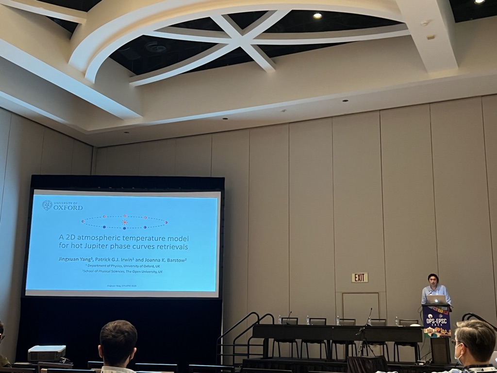

Jingxuan Yang
Oxford PhD Physicist
Exoplanet Atmospheres | Space Telescope Observations | Bayesian Inference | Python Programming
Recent Projects
NEMESISPY: A Python Package for Exoplanets
NEMESISPY is an open source software I developed during my PhD. It performs atmospheric retrievals on telescope observations of exoplanets, which can help us understand what they are made of. NEMESISPY has been used to estimate the abundance of H2O, NH3, and CO on the hot Jupiter WASP-43b, infer the presence of a secondary atmosphere and possible sulphur species on the super-Earth L98-59d, and constrain the atmospheric metallicity of the ultra-hot Jupiter KELT-7b. It is listed on the NASA Exoplanet Modeling and Analysis Center.
Characterising the hot Jupiter WASP-43b
WASP-43b is a Jupiter-sized exoplanet orbiting a star roughly 280 light-years away. The planet completes an entire orbit around the star in about 19.5 hours, which is a mere fraction of the 88-day orbit of Mercury. How such objects form in the first place is an enticing puzzle. With the help of powerful space telescopes such as the Hubble Space Telescope and the James Webb Space Telescope, I constrained the composition of WASP-43b using atmospheric retrievals, which revealed a high-metallicity, high carbon-to-oxygen ratio atmosphere. Consequently, WASP-43b likely formed in a metal-rich environment with enhanced carbon content, possibly due to the inward drift of CO pebbles in the proto-planetary disc.
Research
As an observational astrophysicist, I analyse space telescope observations of exoplanets, which are planets outside our solar system. In particular, I estimate the atmospheric composition of hot Jupiters (Jupiter-sized planets orbiting close to their stars) by fitting models to their emission spectra. By precisiely constrainting the properties of hot Jupiter atmospheres, we can understand how atmospheric physics work under extremely conditions, as well as understanding what hot Jupiters are made of, which may one day help us decipher how they formed in the first place.
Software

I am the principal developper of the NEMESISPY software, which is an open source Python package desigened to perform analysis on the spectra of exoplanets. The code can be found on GitHub .
About Me
Contact
University of Oxford
Department of Physics
Clarendon Laboratory
Oxford
OX1 3PU